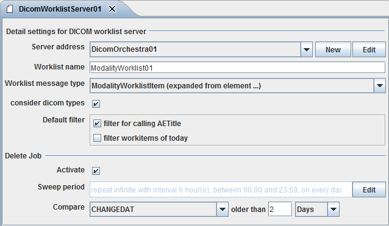

DICOM worklist server

Topic content
Description
Orchestra implements a DICOM worklist server with this channel.
Purpose of object
A DICOM worklist server answers query requests sent by imagine devices. The devices give requests to the worklist server and receives a list of work orders.
Creation
To create a DICOM worklist server follow the steps described in the general description of Channels
Configuration
The dialog to configure the DICOM worklist server looks like:

Step by Step
•Server address Select an environment entry of type DICOM address here.
•Worklist name name of a named message list containing DICOM messages. Typically filled by one of the .
•Worklist message type Here the message type ModalityWorklistItem expanded from the XML schema ModalityWorklistItem.xsd has to be selected.
•consider dicom types If this option is set, on creating the DICOM answer the dicom type of the message fields according to DICOM specification is considered (1=required, 2=required but may be emtpy, 3=not required). This information is contained in the DICOM message type ModalityWorklistItem. Thus if the dicom type of a field is 1 and in the message the field is missing an error message is created (expected required dicom field xy).
•Default filter Normally the Imaging device (the so called modality) asks the DICOM server to deliver all work items matching certain properties. Typically it asks for all work items having the application entity title of the calling modality which have to be performed at the current date. But some modalities are not able to set this query parameters. To support this, the DICOM channel itself can filter for this conditions.
So if the option filter calling AETitle is set the DICOM worklist server returns only the items where the value of the field ScheduledStationAETitle equals the AETitle of the calling modality. And if the option filter workitems of today is set, the DICOM worklist server returns only the items where the ScheduledProcedureStepStartDate is newer or equal than the current date (today).
•Activate If this option is set the channel automatically deletes outdated items from the DICOM message list. An item is outdated if the condition given by the field matches.
•Sweep period
Typically the channel searches its source for available data periodically:

To change the intervals at which the channel searches its data, the user clicks on the button labeled with three dots and then can edit the timer properties.
There are two types of timers, periodical timers and absolute timers. Both are configured using the same dialog. In most cases a periodically timer is used which regularly creates a signal.

timer configuration
•Description for the timer, e.g. polling timer
•Valid from/to Here the user can state a time span where the timer is valid. Outside of this time span, the timer is invalid and doesn't create events.
•Mode This Option is only sensible if the timer dialog is used to configure a timer event. In the context of channels it is disabled.
•Trigger type The user may restrict the timer to work only at certain days:
oDaily Here the user may restrict the timer to fire events on certain days of the week
oMonthly Here the user may restrict the timer to fire events at a particular day of the month
•Absolute If an absolute timer is configured, the user must enter a fixed time at which the timer raises an event. E.g. one could declare the timer to run every day at 6:00 in the morning.
•Periodically If an Periodical timer is used the user has to configure the following properties:
oStart/End time A time span of the day where the timer shall be active
oRepeat count Here the user may restrict the timer to fire only a certain amount of events after start. E.g. one could declare the timer to start at 6:00 AM an fire exactly 2 times. The standard value is infinite, that means there is no restriction.
oRepeat interval the time interval after which an event is fired periodically.
•Compare Here the user can select a message field together with a compare value to decide if a worklist item is outdated and has to be deleted by the sweep job. Per default the condition CHANGEDAT older than 2 days is set. You may also compare the with values of the fields CREATEDAT and ScheduledProcedureStepStartDate.
See also
A user can be created as described here.
See also DICOM worklist deserializer, DICOM worklist serializer, DICOM worklist